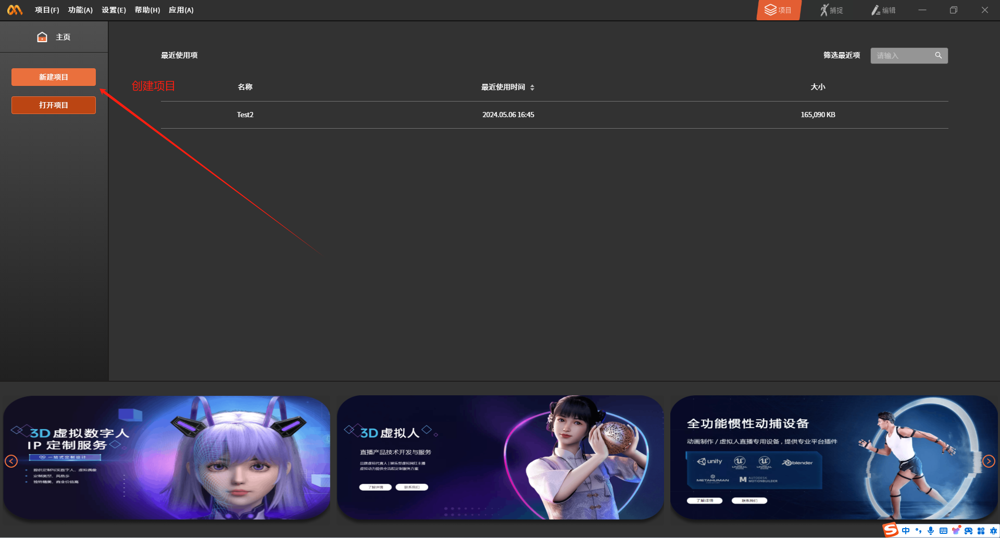
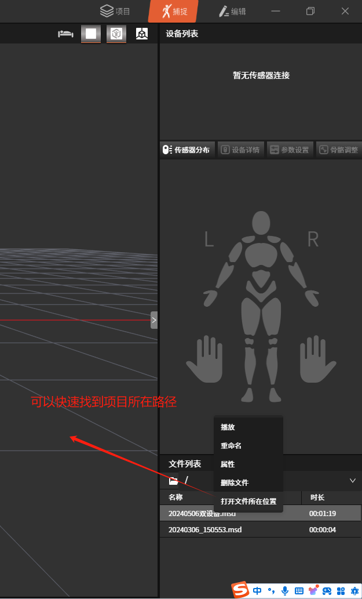
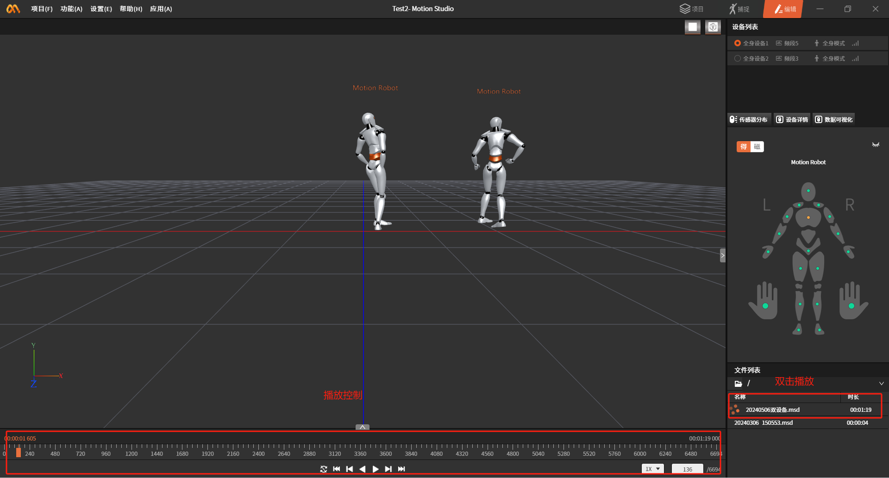
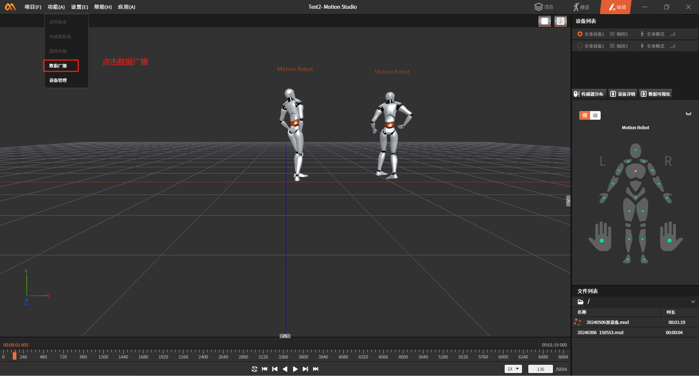
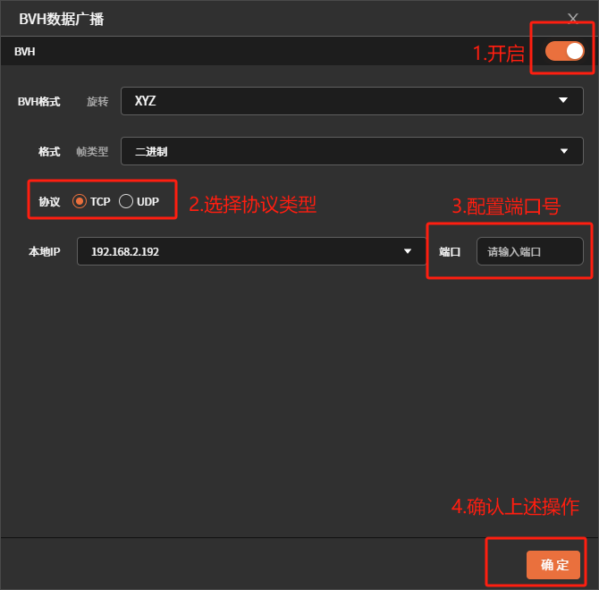

数据导入
MotionStudio中导入动捕文件并数据广播
- 下载、登录MotionStido
motionStudio下载地址： https://mostech-studio.oss-cn-hangzhou.aliyuncs.com/software/motion-studio/archives/MotionStudio_Setup_v1.8.18.exe
使用手机号注册登录就行
- MotionStudio中新建项目
创建项目，最好将项目放在一个自己好找的目录(后面会用到此路径)。
{width="5.21875in" height="2.8125in"}
- 导入动捕数据相关文件及配置
3.1导入动捕数据描述文件
动捕数据描述文件
将文件放在项目路径DataFile目录下。例如:C:\xxx\xxx\Desktop\temp\MS\Test2\DataFile
{width="3.3020833333333335in" height="5.458333333333333in"}
3.2导入动捕数据文件
动捕数据文件
请至钉钉文档查看附件《.vihchzpt03tjute65dln8x9apry72h4w_9000_1_msdf》
将动捕数据文件放在DataFile\\.dfs文件夹下。例如:C:\xxx\xxx\Desktop\temp\MS\Test2\DataFile\.dfs
3.3修改动捕数据描述文件
使用文本编辑器或其他工具打开描述文件
ctrl+f搜索关键词\"DataFile\"将原始文件路径(C:\\Users\\16637\\Desktop\\temp\\MS\\Test2\\DataFile)改为自己项目路径，有三处需要修改。
3.4播放动捕数据
如果以上配置正确会在文件列表中看到\"20240506双设备.msd\"文件。双击文件就可播放录制的动捕数据。
{width="5.760416666666667in" height="3.1041666666666665in"}
- 开启数据广播
{width="5.760416666666667in" height="3.1041666666666665in"}
{width="5.760416666666667in" height="5.677083333333333in"}